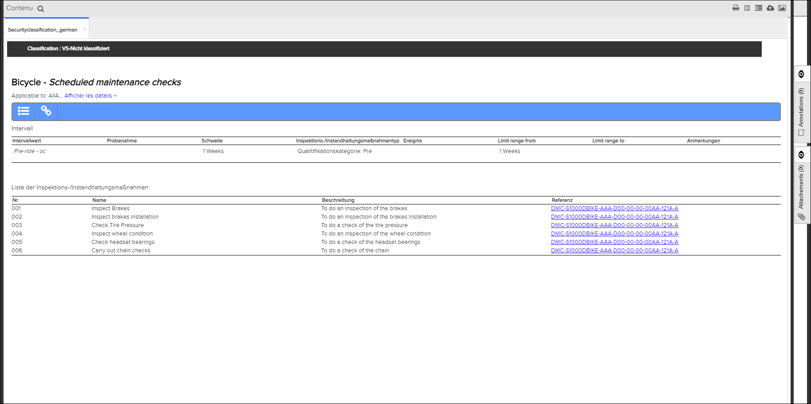
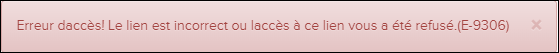
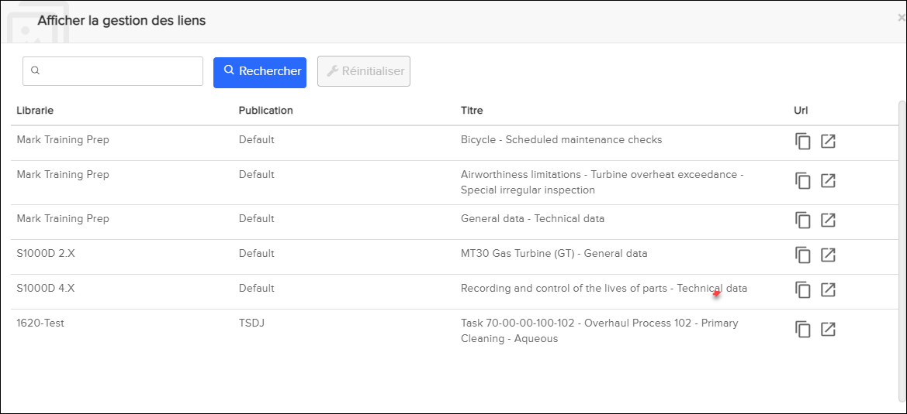

Non applicable pour Pinpoint Standalone/Pinpoint Standalone Light.
Les
utilisateurs disposantt d'autorisations de lecture pour le privilège
Can view the content of restricted links peuvent afficher le
contenu d'un lien restreint. Un utilisateur administrateur crée le lien restreint et envoie
le lien aux groupes d'utilisateurs sélectionnés. Si un utilisateur est membre de l'un de ces
groupes et a accès à Pinpoint, l'utilisateur peut afficher le lien restreint.
Remarque : Les liens
restreints s'appliquent uniquement au S1000D (modules de données) ou à l' iSpec2200
(tâches).
Lorsque vous sélectionnez un lien restreint, le contenu est lancé
dans un onglet séparé.

Lien restreint - Contenu affiché
Remarque : Si vous n'êtes pas membre d'un groupe d'utilisateurs sélectionné et que vous
essayez d'afficher le contenu d'un lien restreint, un message d'erreur s'affiche, par
exemple :

Plusieurs icônes sont
disponibles en haut de la page Contenu .
L'icône  Afficher la gestion des liens ouvre la boîte de dialogue
Afficher la gestion des liens. Cela fournit une liste de tous les
liens restreints auxquels vous avez accès, par exemple :
Afficher la gestion des liens ouvre la boîte de dialogue
Afficher la gestion des liens. Cela fournit une liste de tous les
liens restreints auxquels vous avez accès, par exemple :
Vous pouvez effectuer ces actions sur les liens restreints de la liste :

Afficher la gestion des liens Dialogue
- Cliquez sur l'icône
 Copier pour copier l' URL du lien restreint dans votre
presse-papiers.
Copier pour copier l' URL du lien restreint dans votre
presse-papiers. - Cliquez sur l'icône
 Ouvrir dans un nouvel onglet pour ouvrir le lien restreint dans
un nouvel onglet.
Ouvrir dans un nouvel onglet pour ouvrir le lien restreint dans
un nouvel onglet.
Ce tableau répertorie les icônes et leurs descriptions :
| Icon | Description |
|---|---|
| Cliquez sur cette icône pour ouvrir la boîte de dialogue Options d'impression qui vous permet d'exporter le contenu au format PDF. Reportez-vous à Imprimer en PDF. | |
| Cliquez sur cette icône pour ouvrir la boîte de dialogue Afficher
la gestion des liens afin d'afficher une liste des liens auxquels
vous avez accès. Remarque : Vous devez disposer des autorisations de
lecture pour Can view the content of
restricted links pour voir cette liste.
|
|
| Cliquez sur cette icône pour afficher le contenu dans le style ATA. Faire référence à Afficher le contenu dans le style ATA. | |
| Cliquez sur cette icône pour ouvrir le formulaire Remarques Reportez-vous à Remarque. | |
|
Cliquez sur cette icône pour ouvrir le volet Graphique.
Ensuite, sélectionnez l'icône |